1回目：スカートの突出
同じ横位置で車体裾より約1.59 mm前へ出ていた。
スカートを後退。幅広い床返しと栓・管も追従。

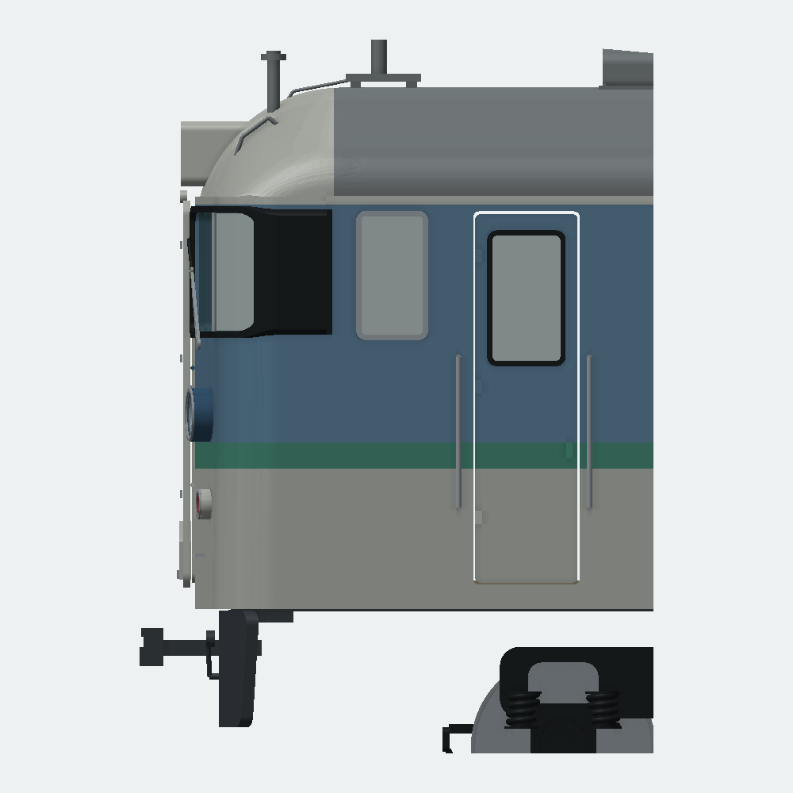
各回で生成した形を確認し、原写真と照合して次の修正へ進みました。スカート、前面取付物、客扉、側窓、ジャンパ栓を修正。5枚の画像だけを作った記録ではなく、異なる5版のCAD計算と比較です。
通常版CAD ／ 前後分割版CAD ／ 開き方・組立・制限 ／ 各回の対象版・時刻・検査
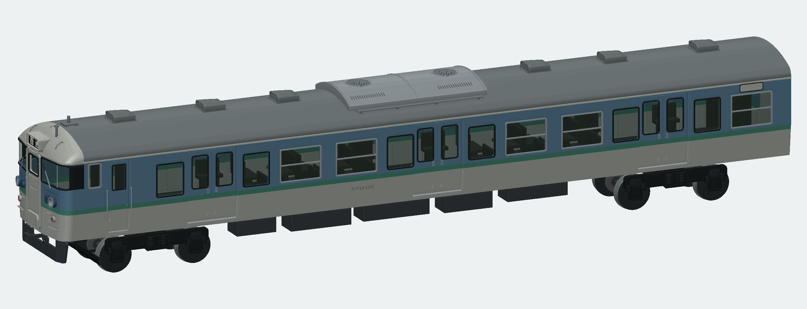
塗装画像は、CADが出力したSTLからの描画です。AI予想図や操作画面ではありません。実際のCAD画面は下に掲載しています。
同じ横位置で車体裾より約1.59 mm前へ出ていた。
スカートを後退。幅広い床返しと栓・管も追従。

一定Xの手掛けとステップが折妻に沿わず、端が浮いていた。
折妻に沿う傾きと短い取付脚を作り、背面を実車体で切り合わせた。
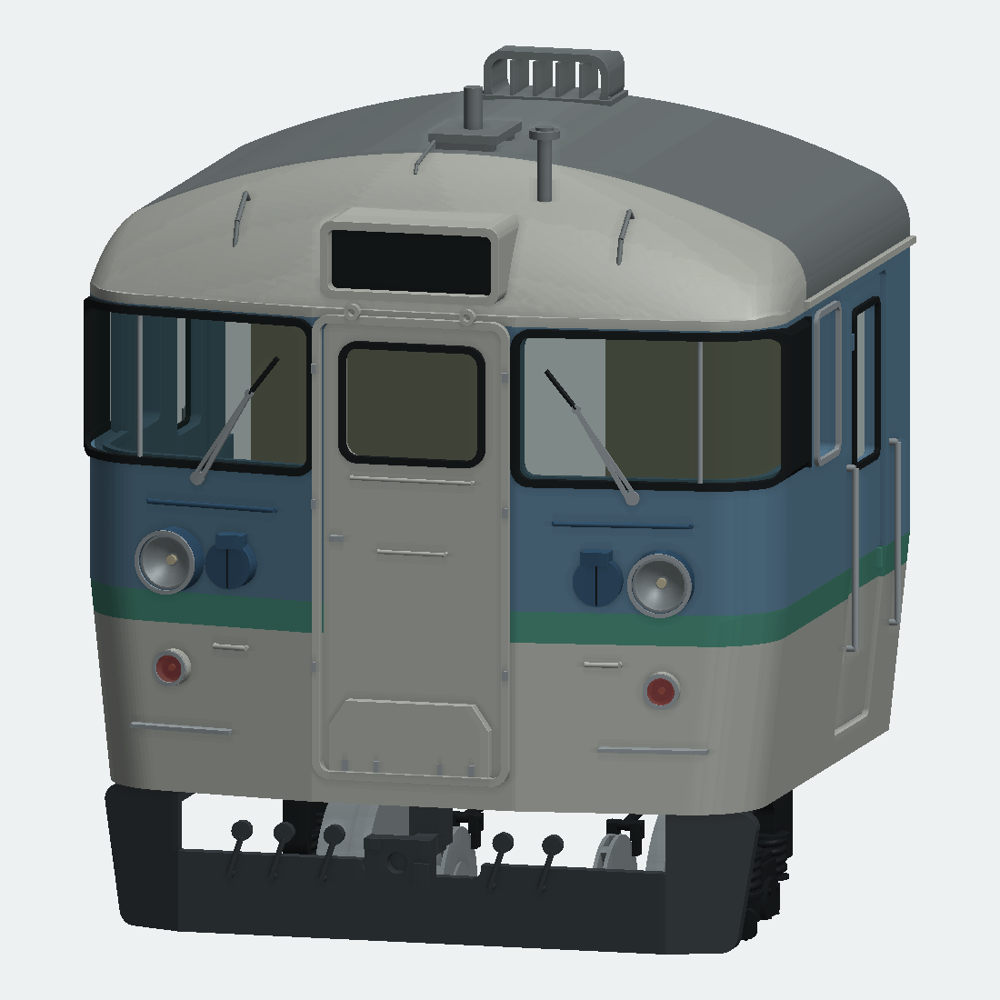
窓が短く、手掛けが小さな丸環。下部指掛けの初回修正は裾絞りに追従しなかった。
窓上端を保って下へ拡大。角形手掛けと上下の浅い凹部。拡大画像で見つけた膜を除去して再検査。
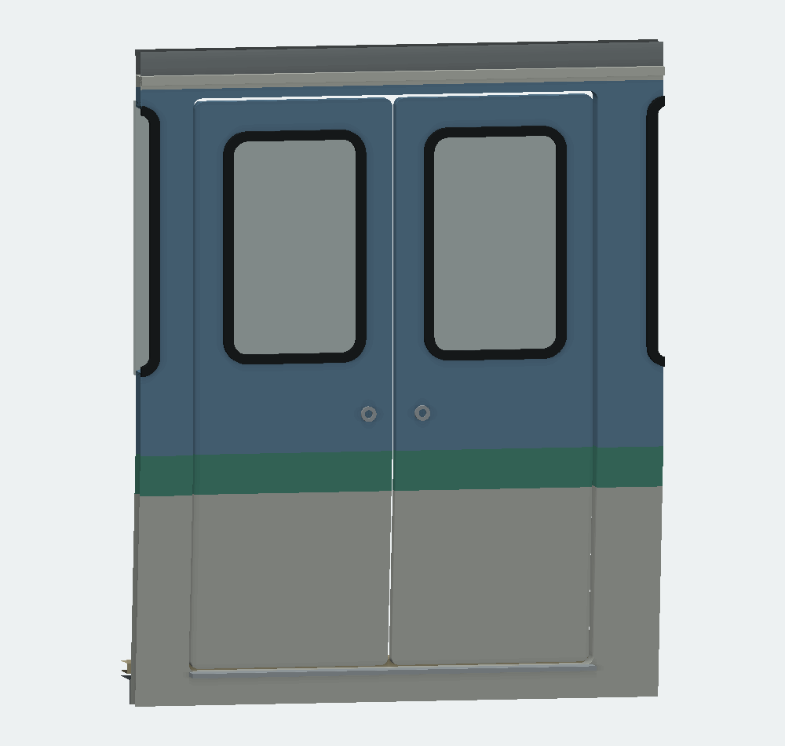
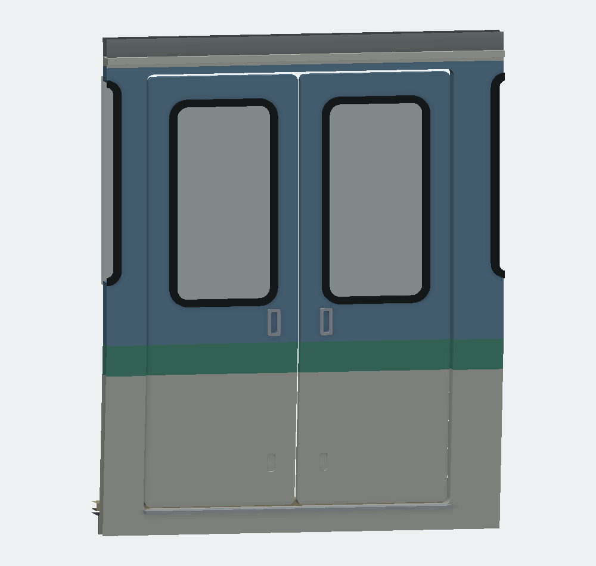
側窓上端が扉上端に近すぎ、後部の側面表示もなかった。
側窓の列を下げ、上下サッシ・開口・裏ガラスを追従。同車写真で確認できる側に表示枠を追加。
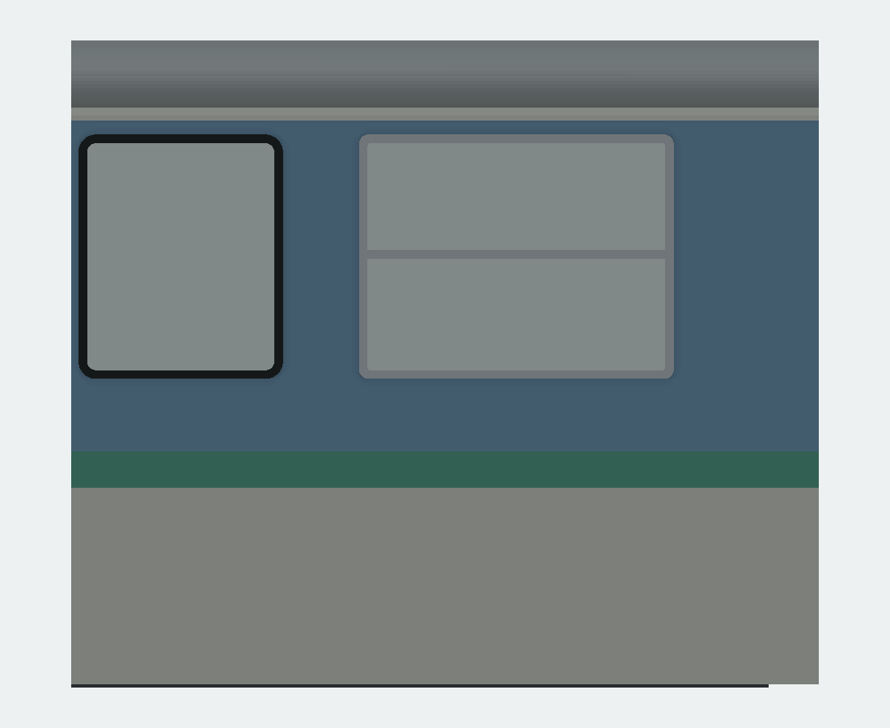
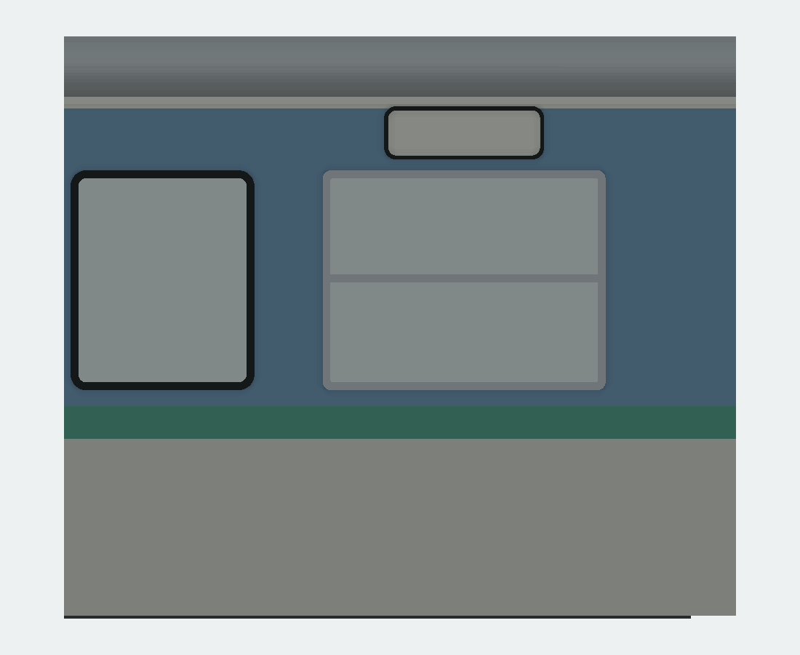
5個の栓が円柱と直管で、栓箱・蓋・下側の曲がりが乏しかった。
角丸の箱と蓋、短い曲管を各1部品へまとめ、全体・左右・屋根・台車を再確認。
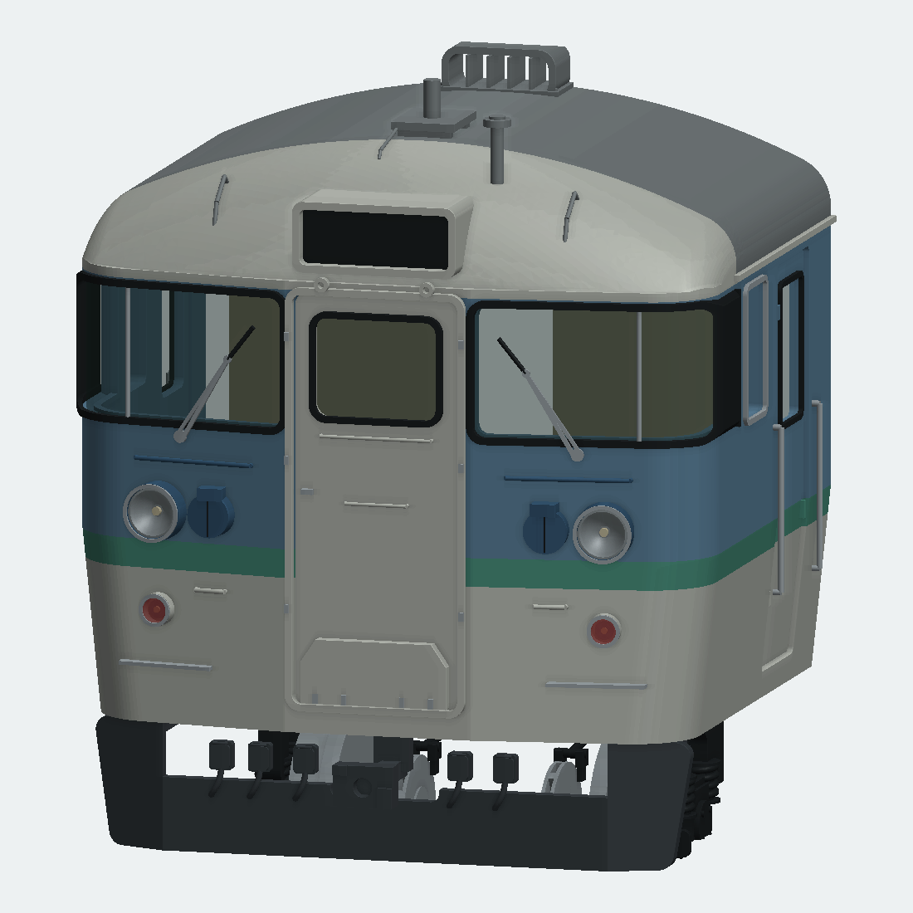
Y=0、±6、±10、±12.7、±14 mmの9か所で、車体裾Z14 mmとスカートZ7 mmの前縁を比較。修正前の最大突出は約1.59 mm、修正後は最小でも約0.41 mm後退。2 mmの移動は模型設計値で、実車の実測寸法ではありません。
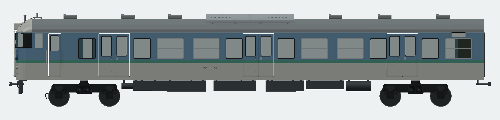
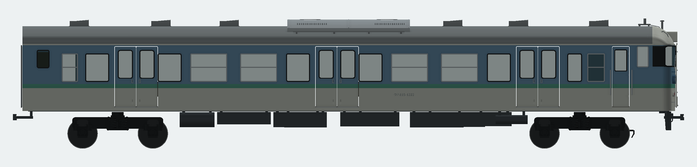
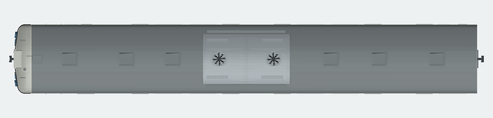
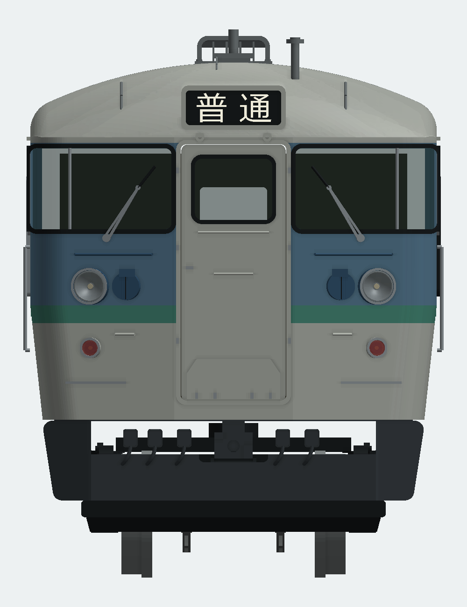

貫通扉窓は幅7.2×高さ5.8 mmを維持。冷房キセの屋根への納まり、床板一体スカート、扉下部の裾絞り、前回のTR62実形状も保持しています。
同車クハ115-1222／N15の原写真で前面・客扉・屋根・側面幕を照合しました。写真は2013年の訓練車時代です。営業時代の長野色へ、後年の訓練車表示や内装改造を移していません。
局所R、折角、手掛け寸法、窓高さ、栓箱の大きさと管の曲がりは写真からの模型設計です。反対側の行先表示位置、床下機器の完全な同定、年代ごとの配管差は未確定。側面表示の文字は空欄です。特定年度・車番の実測復元を完了した意味ではありません。
| 版 | 部品 | 点 | 接触 | 全対の干渉候補 | 再組立 |
|---|---|---|---|---|---|
| full | 234 | 1063 | 119 | 438 | 0 |
| split | 241 | 1063 | 119 | 429 | 6 |
全可視部品が有効な1閉ソリッド・正体積。全STEP再読込、全STLの閉鎖性・面向き・退化・体積差、全対候補の実BRep干渉、保存・再読込を検査。干渉許容1e-6 mm³、STL体積差上限0.2%を維持しました。
最終検証 ／ 欠落・古い証拠を拒否する8試験。途中の各回は重点検査で、最終版の全体検査と区別しています。
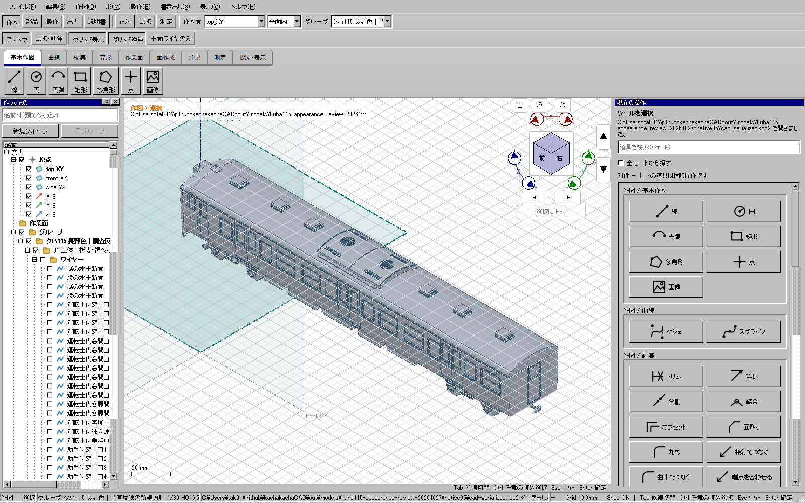
CAD本体は前回の検証済み配布版と同一。今回アプリ全体試験を再実行した意味ではありません。模型は新たに計算・出力・保存再読込・Windows通常表示を確認しています。
通常234／分割241部品。実印刷・接着強度・走行・旋回は未試験です。旧版・原本は保全。